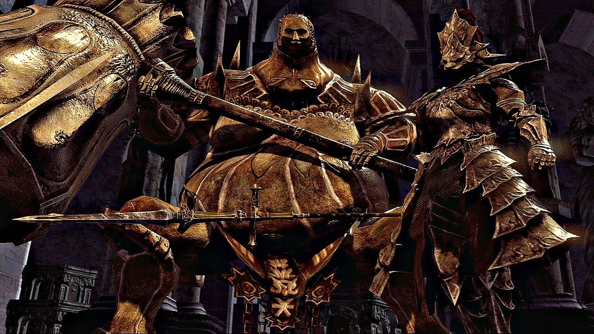
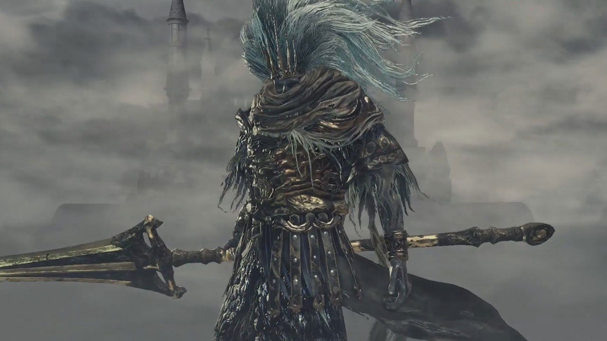

Introducao
Em Dark Souls você assumirá o papel de um herói amaldiçoado, uma figura destinada a enfrentar adversidades inimagináveis em um mundo à beira do colapso. O combate é implacável, os inimigos são formidáveis e a morte é inevitável. No entanto, é através da perseverança e da superação que você descobrirá seu verdadeiro potencial.
Cada confronto com um chefe, cada obstáculo superado e cada nova área explorada são conquistas que você ganha com esforço. Este é um jogo que recompensa a habilidade, o pensamento estratégico e a exploração paciente.
Se você está pronto para entrar em um mundo sombrio e misterioso, onde a coragem é testada e a recompensa é incrível, então junte-se a nós e embarque nesta jornada inesquecível.



Personagens
Enfrente diversos adversários extremamentes fortes que te farão passar por todos os tipos de sentimento e tirarão seu sono de tão empolgante que são as batalhas
Triologia
O primeiro jogo da série Dark Souls se passa em um mundo chamado Lordran, que está mergulhado na escuridão e na decadência. Os jogadores assumem o papel de um personagem amaldiçoado, um "Chosen Undead," e são incumbidos de uma missão sombria: encontrar e tocar os sinos de despertar para abrir o caminho para Anor Londo e enfrentar os poderosos Lordes das Trevas. A história revela-se de forma enigmática por meio de diálogos e descrições de itens, deixando muitos detalhes abertos à interpretação.
Em Dark Souls II os jogadores exploram o reino de Drangleic, uma terra repleta de mistérios e ameaças. O personagem principal, conhecido como "Bearer of the Curse," busca encontrar uma cura para sua maldição enquanto desvenda os segredos do passado de Drangleic. A história aborda temas de decadência, memória e sacrifício, à medida que os jogadores enfrentam inimigos formidáveis e descobrem o destino de personagens misteriosos.
O terceiro e final jogo da série principal, Dark Souls III, leva os jogadores a Lothric, um reino em colapso à beira do apocalipse. O personagem principal, conhecido como "Ashen One," é encarregado de reunir os Lordes das Cinzas e reacender a Chama da Primeira Chama. A história explora temas de ciclo eterno, decadência e a inevitabilidade da morte, enquanto os jogadores enfrentam desafios cada vez mais intensos e confrontam os horrores do mundo em ruínas.